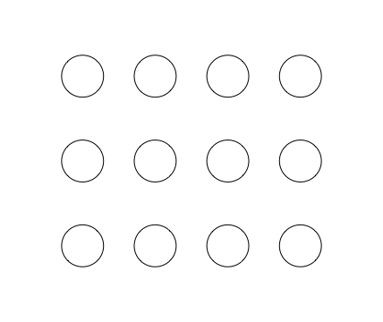
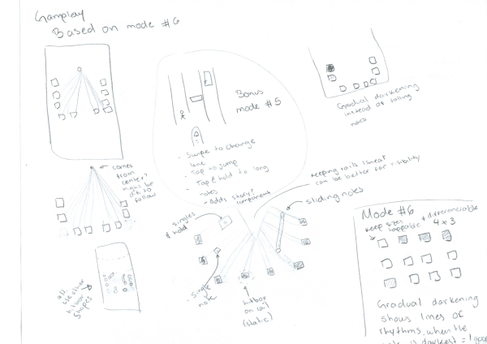
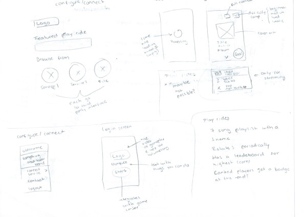
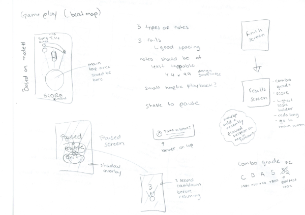

Mobile rhythm game prototype
Reading time: 3 minutes
A game for iPhone devices where users can spend idle time playing any song from their private library, tapping buttons in a grid and following the song’s rhythm. The design process was interactive, with strong emphasis on gameplay, engagement elements, domain literature research and direct application of common design principles for mobile.
Figure 1. The prototype for the grid-style gameplay
Design process
This project was heavily based on design research rather than field research. In order to justify the purpose and approach of the app I relied heavily on literature research. Using previous research papers, specially one detailing usability testing on different play styles commonly found on rhythm games and some more on the demographics for the genre I sketched some screens on paper.
Figure 2. The actual engagement elements are distributed outside the gameplay. Adding a social competition factor to keep players coming back
Figure 3. Some iterations on lanes, falling notes and grid gameplay styles
Figure 4. Aside from the beat map style (the way the notes appear). I also had to consider pausing, scoring and so on
After I had collected enough information and made some rough sketches, the next step was to start designing the actual interactions, which were heavily reliant on design patterns, specially the ones found on Johnson’s Designing with the Mind in Mind. Interactions were designed in UXPin, and during this stage I experienced two big challenges, to get to know and handle UXPin, and incorporating a settled aesthetic for the app, which drew inspiration from outrun and retro gaming.
For the actual gameplay I had to drop UXPin and make a prototype in another app, in order to properly showcase timings, movement patterns and basically test that the grid pattern was actually fit for mobile.
Video 1. A simulated playthrough of the proposed game
Tools used
- Personas development based on research identifying pain points and context of use
- Flow diagram to detail the app architecture
- UX Pin for the final prototype
- MacOS Keynote to prototype the grid-based gameplay
Limitations and next steps
This was an academic project for the Prototyping and Interaction Design course on Bentley’s MSHFID program. This limited the timeline to approximately four months, and reduced the capabilities to undergo proper usability testing and field research.
If this project took off, a product team would need to undergo usability testing on the UXPin protoype, with special emphasis on the gameplay. A graphic designer would give the interface a make up, keeping the aesthetic principles present on the prototype, while incorporating a more refined color palette, particuarly one with good contrast to font ratio, in order to make the app usable under different lightning environments. Legally speaking, the hypothetical team would need to carefully review the terms and conditions of each streaming library the app would be configured to connect with.
On the technical side, there indeed are some algorithms to convert audio files into beat maps. However, additional work would be needed in order to either convert an open-source one such as Karl O’Keeffe’s Dancing Monkeys or use previous research (like OSU’s) to create a new algorithm from scracth.